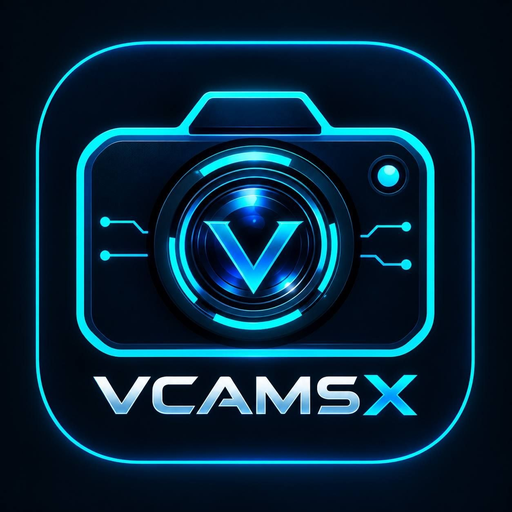

SECURE CHECKOUT
Return to VCamSX
Opening VCamSX. If your browser asks, allow it to open the app.
Return to VCamSX Open with another browserVCamSX will check your existing order with the payment provider. If confirmation is still pending, tap I paid · Check in the app.
This page does not confirm payment or issue a key. Keep your receipt and do not pay again while the order is being checked.